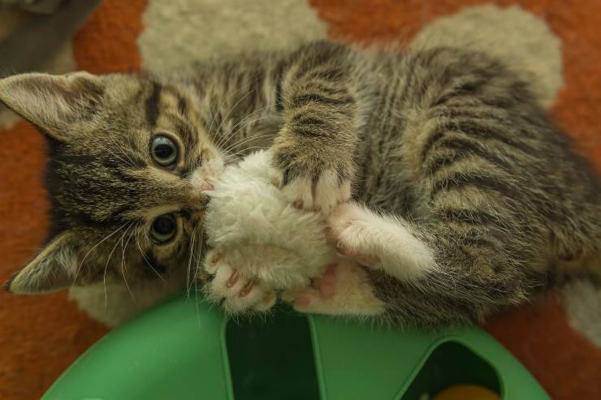
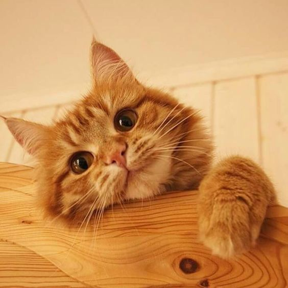

Imágenes de gatos
 Los gatos son una excelente mascota que puedes tener y que forme parte de tu familia.
Los gatos son criaturas indiferentes y poco cariñosas, que ronronean por tu casa, maúllan y organizan peleas nocturnas en los techos. Además, trepan tus muebles, dejan pelos a su paso, arañan lo que encuentran y marcan su territorio con un tufo difícil de ignorar tienen no una sino tres fechas al año que celebran su existencia.
Datos curiosos sobre los gatos
- Pueden llegar a vivir 21 años.
- Duermen entre 13 y 14 horas al día (quién como ellos).
- Sus bigotes, llamados vibrisas, son amplificadores de sus sentidos, ya que les permiten detectar vibraciones, corrientes de aire y movimientos a distancia.
Cosas que odian los michis :/
- Que les rasquen la panza (ciertos gatos)
- Los cítricos
- Otros gatos
Estas son las razones por las que los gatos se lamen su pelaje.
¿Por qué los gatos aman las cajas?
5 Datos súper lindos y curiosos de los gatos
- Cuando tu gatito se frota en tus piernas, está compartiendo su linda energía contigo.
- Los gatitos sienten la energía del lugar en el que se encuentran y la purifican. 3. Los gatos negros protegen tu casa de las malas energías.
- Los gatitos amarillos atraen la abundancia y la buena suerte.
- Los mininos grises atraen el amor y la armonía.
- Los gatitos rayados traen la buena suerte y la felicidad.
Estas son las razones por las que los gatos se lamen su pelaje.
La lengua de los gatos contiene 300 papilas pequeñas, huecas y rígidas en forma de cuchara que les
permiten
mojar con
saliva la base de su pelaje. Esto lo observaron investigadores estadounidenses con la ayuda de cámaras
de
alta
resolución.
Los gatos se lamen para darle mantenimiento a su pelaje para evitar nudos. Además,
eliminan
la
suciedad y las pulgas. Ya que, la saliva también tiene un poder limpiador.
¿Por qué los gatos aman las cajas?
La búsqueda de espacios confinados es un comportamiento instintivo de los gatos. En la naturaleza, estas
áreas permiten
que los animales se oculten de los depredadores y también desde ahí escrupulosamente pueden acechar a
sus
presas.
Cuando un gato está dentro de una caja, siente que no puede ser atacado, y cualquier cosa que se acerque
estará
directamente en su campo de visión. Y en efecto, tales espacios de escondite les permiten ver el mundo a
su
alrededor
sin ser vistos.
En este link encontrarás mas información sobre michis .
Qué tipo de gatito es?
¿Tu gatito es minino o adulto?
Qué tipo de gato es el tuyo?